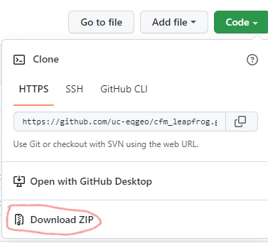

Installation instructions and updates to code
Prerequisites
You’ll need some form of conda, for example Anaconda3 or miniforge.
Installation instructions for Anaconda can be found here.
Alternatively (and better in most ways), install miniforge.
You will also need to download the code from the GitHub repository (https://github.com/uc-eqgeo/cfm_leapfrog). If you are new to git, this is probably best to do using the download zip interface on GitHub. Make sure you unzip it if you do that.

Installation
Open Anaconda or Miniforge Prompt
Run
cd {PATH_TO_REPO}and hitEnter, where{PATH_TO_REPO}is the location where you have downloaded the code to, for exampleC:\Users\{USER}\Documents\projects\cfm_leapfrog. In this case,{USER}is your username. Note that if you have downloaded to a drive that is different from yourC:drive, you will need to change drives first; for example, typeD:followed byEnter.Run
conda env createand hitEnter.Run
conda activate leapfrog-fault-modelsand hitEnter
Updating the code to a new version
In the early stages of this project, we will be updating the code frequently. To update to the latest version, follow these steps:
Open Anaconda or Miniforge Prompt
Activate the environment:
conda activate leapfrog-fault-modelsfollowed byEnterEnter the command
pip install git+https://github.com/uc-eqgeo/cfm_leapfrog/#subdirectory=tectonic_fault_mesh_toolsfollowed byEnter